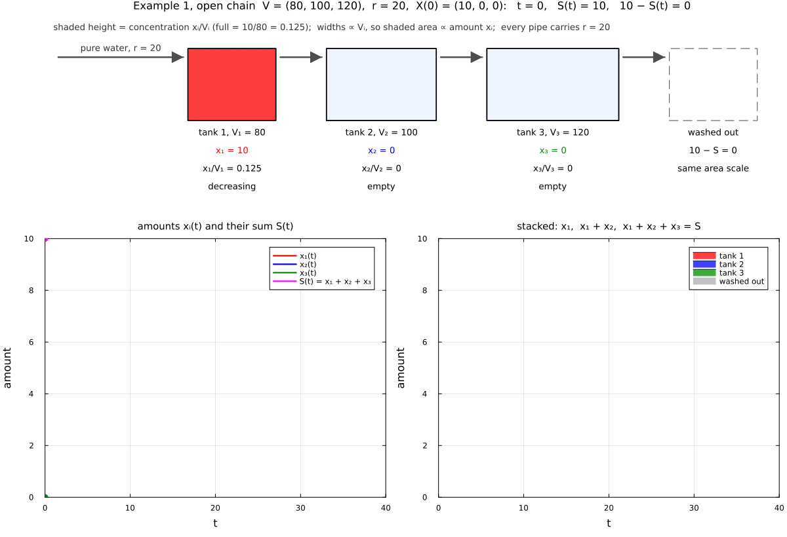
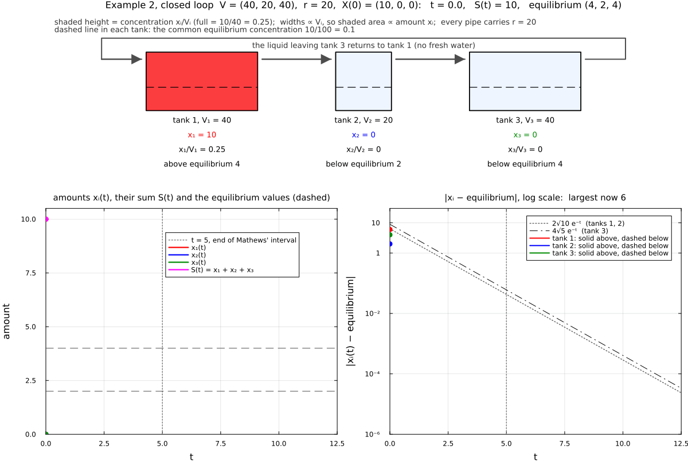
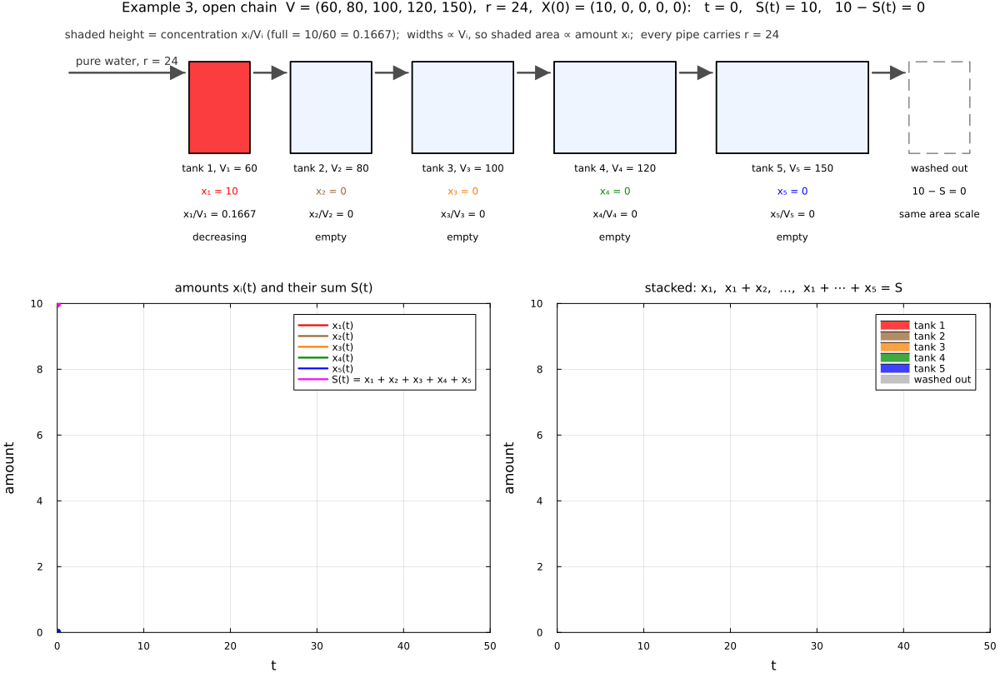

Compartment Model
Source inspiration: (Mathew 2000-2019).
Description
A compartment model follows a dissolved substance as it is carried by a liquid through a chain of well-mixed tanks. Tank \(i\) holds a fixed volume \(V_i\) of liquid and an amount \(x_i(t)\) of the substance; liquid flows from tank to tank at the constant rate \(r\), so the substance leaves tank \(i\) at the rate \(r\,x_i/V_i = k_i x_i\) and enters the next tank at the same rate. Writing “rate in minus rate out” for every tank gives a linear system of differential equations with constant coefficients,
\[ \mathbf{X}'(t) = \mathbf{A}\,\mathbf{X}(t), \qquad \mathbf{X}(0) = \mathbf{X}_0, \qquad k_i = \frac{r}{V_i}, \]
whose matrix \(\mathbf{A}\) records which tank drains into which. The method is the eigenvalue method for linear systems: find the eigenvalues \(\lambda_j\) and eigenvectors \(\mathbf{V}_j\) of \(\mathbf{A}\), form the general solution \(\mathbf{X}(t) = \sum_j c_j e^{\lambda_j t}\mathbf{V}_j\), and choose the constants \(c_j\) to match the initial amounts. (When the eigenvalues are complex the real and imaginary parts of \(e^{\lambda t}\mathbf{V}\) are used instead; equivalently, \(\mathbf{X}(t) = e^{\mathbf{A}t}\mathbf{X}_0\) with the matrix exponential.)
Mathews works three examples, all solved in closed form with no numerical integration and all starting with \(10\) units of the substance in the first tank and none in the others: an open chain of three tanks fed by pure water, where the substance is washed out of the system; a closed loop of three tanks, where it is only redistributed; and an open chain of five tanks. Every solution below has been checked by substituting it into the differential equations and by comparing it with a high-accuracy numerical solution.
Animations
Each animation below runs one of Mathews’ three examples forward in time. The top of each frame draws the tanks with widths proportional to their volumes and a common height, so the shaded height in a tank is the concentration \(x_i/V_i\) of the substance and the shaded area is proportional to the amount \(x_i\); arrows show the flow, and the labels under each tank give its amount and concentration at the time in the title. Since every pipe carries the same rate \(r\), each tank fills exactly while its shaded height is below that of the tank feeding it (\(x_i' = r\,(x_{i-1}/V_{i-1} - x_i/V_i)\); tank 1 of an open chain is fed pure water and only drains), and a tank reaches its maximum when the two shaded heights are level. Below the tanks, the amounts \(x_i(t)\) and their sum \(S(t)\) grow in time, with a dot on the newest value of each. The curves are the exact solutions found below by the eigenvalue method: the scripts compute the eigenvectors and the constants in exact rational arithmetic and evaluate the sums of exponentials in 256-bit arithmetic.
Mathews’ module links no animation, and his animation archive has none for the compartment model, so all three animations are new, with no Mathews original. They follow his three examples, with his parameters and, where his output survives, his plot windows and colours (his green darkened for legibility). Not animated are his matrix-exponential construction in Example 2, which gives the same solution as Case 2; the plots of his Example 2, whose images are lost from the archive, including his plot of how the three curves stack up; the generalized-eigenvector case of equal volumes, which he mentions in a remark but does not work, and the equal-volume example in the callout below.
Julia source scripts that generated these animations are linked under each case.
Case 1 — Mathews’ Example 1, open chain, \(V = (80, 100, 120)\), \(r = 20\), \(\mathbf{X}_0 = (10, 0, 0)\), \(0 \le t \le 40\)
Behavior: Tank 1 drains from the start, \(x_1 = 10e^{-t/4}\), while the substance passes down the chain. Tank 2 fills until its shaded height is level with that of tank 1, at its maximum \(x_2 = 4.096\) at \(t = 4.463\), and tank 3 until it is level with tank 2, at \(x_3 = 3.248\) at \(t = 9.866\); a diamond marks each maximum once it has passed, and afterwards both tanks drain. The total \(S(t)\) starts flat, because nothing leaves the system until tank 3 fills (\(S' = -\tfrac16 x_3\)), and then decreases in every frame. The dashed tray on the right collects the washed-out amount \(10 - S(t)\), drawn to the same area scale as the tanks; at \(t = 40\) it holds \(9.851\), and the \(S = 0.1488\) left in the system is mostly in tank 3 (\(x_3 = 0.1339\)). The bottom right panel is Mathews’ filled plot, with bands for \(x_1\), \(x_1 + x_2\) and \(S\) in his red, blue and green; the gray band above \(S\) is the washed-out amount, so the bands always add up to \(10\). Mathews plots the single curves on \([0, 20] \times [0, 10]\); both panels here use the \([0, 40] \times [0, 10]\) of his sum and filled plots.

Case 2 — Mathews’ Example 2, closed loop, \(V = (40, 20, 40)\), \(r = 20\), \(\mathbf{X}_0 = (10, 0, 0)\), \(0 \le t \le 12.5\)
Behavior: The liquid leaving tank 3 returns to tank 1, so the total stays \(S = 10\) in every frame and the substance is only redistributed: the shaded heights level out at the common equilibrium concentration \(10/100 = 0.1\) (the dashed line in each tank), so the amounts tend to \((4, 2, 4)\), in proportion to the volumes. Tank 2, the smallest, is the first to reach its equilibrium value: its shaded height passes the dashed line at \(t = 0.6435\) and overshoots it, to the concentration \(0.1294\) (\(x_2 = 2.588\)) at \(t = \pi/2\). On the linear scale of the left panel the curves look settled by \(t = 5\), the end of Mathews’ interval (dotted line), where no tank is more than \(0.035\) from its equilibrium value. The right panel plots the distance \(|x_i - \text{equilibrium}|\) on a log scale, solid while \(x_i\) is above its equilibrium value and dashed while below, and shows that the approach goes on as a damped oscillation. Each distance stays under its envelope, \(2\sqrt{10}\,e^{-t}\) for tanks 1 and 2 and \(4\sqrt5\,e^{-t}\) for tank 3, the straight lines of the log plot, and drops out of the bottom of the panel each time the tank crosses its equilibrium value: tank 2 at \(t = 0.6435\) and \(6.927\), tank 1 at \(3.785\) and \(10.07\), tank 3 at \(5.356\) and \(11.64\), consecutive crossings of a tank being \(2\pi\) apart. At \(t = 12.5\) the largest distance is \(2.21 \times 10^{-5}\). Mathews’ plots of this example are lost, so the window \([0, 12.5] \times [0, 10.5]\) and the colours, those of his Example 1, are chosen here; the clock runs past his \(t = 5\) so that every tank crosses its equilibrium value twice.

Case 3 — Mathews’ Example 3, open chain, \(V = (60, 80, 100, 120, 150)\), \(r = 24\), \(\mathbf{X}_0 = (10, 0, 0, 0, 0)\), \(0 \le t \le 50\)
Behavior: The pulse of substance travels down the chain of five tanks. Each of tanks 2 to 5 fills until its shaded height is level with that of the tank before it, and the maxima, marked by diamonds, come later and lower from tank to tank: \(4.219\) at \(t = 2.877\), \(3.383\) at \(6.527\), \(2.967\) at \(10.97\) and \(2.828\) at \(16.48\). With five tanks to pass, the total stays near \(10\) longer than in Case 1 (\(S(5) = 9.916\), against \(9.178\) for the three tanks of Case 1), since only tank 5 empties out of the system (\(S' = -\tfrac4{25}x_5\)), and then it decreases in every frame. At \(t = 50\) the tray holds \(9.878\), and of the \(S = 0.1219\) left nearly all is in tanks 4 and 5 (\(x_4 = 0.01188\), \(x_5 = 0.1093\)). Mathews’ window \([0, 50] \times [0, 10]\) and his colours red, brown, orange, green and blue are used for both panels; his own plot of \(S\) chooses its vertical range automatically, and the bottom right panel is his filled plot, with the washed-out amount added in gray.

Modelling the Tanks
A tank is well mixed if the substance is spread uniformly through its liquid at every instant, so that its concentration is \(x_i(t)/V_i\) everywhere in the tank, including in the liquid that flows out.
If liquid enters and leaves tank \(i\) at the same rate \(r\), its volume \(V_i\) stays constant, and the substance leaves it at the rate (flow rate) \(\times\) (concentration) \(= r\,x_i/V_i\). The balance law for tank \(i\) is
\[ \frac{dx_i}{dt} = (\text{rate in}) - (\text{rate out}). \tag{1} \]
Mathews abbreviates the outflow coefficients as
\[ k_1 = \frac{r}{V_1}, \qquad k_2 = \frac{r}{V_2}, \qquad k_3 = \frac{r}{V_3}, \ \ldots \tag{2} \]
so that the substance leaves tank \(i\) at the rate \(k_i x_i\). A large tank (large \(V_i\)) has a small \(k_i\) and holds on to its substance longer. Mathews’ proof and program pages for this module were never written (both are empty placeholder pages in the archive), so the derivation here is the standard one.
Model I — The Open Three-Stage System
Pure water flows at the rate \(r\) into the first tank; the mixture flows at the rate \(r\) from tank 1 into tank 2, from tank 2 into tank 3, and out of tank 3. Applying (1) to each tank,
\[ \begin{aligned} x_1' &= -k_1 x_1, \\ x_2' &= \phantom{-}k_1 x_1 - k_2 x_2, \\ x_3' &= \phantom{-}k_2 x_2 - k_3 x_3, \end{aligned} \qquad x_1(0) = a_1,\ x_2(0) = a_2,\ x_3(0) = a_3, \tag{3} \]
or \(\mathbf{X}' = \mathbf{A}\mathbf{X}\) with the lower triangular matrix
\[ \mathbf{A} = \begin{pmatrix} -k_1 & 0 & 0 \\ k_1 & -k_2 & 0 \\ 0 & k_2 & -k_3 \end{pmatrix}. \]
Eigenvalues and eigenvectors of a chain
Because \(\mathbf{A}\) is triangular, its eigenvalues are its diagonal entries, \(\lambda_j = -k_j\). All of them are negative, so every solution of (3) decays to \(\mathbf{0}\). For the eigenvalue \(-k_j\) an eigenvector \(\mathbf{V}_j\) has zeros above position \(j\), a \(1\) (or any convenient nonzero number) in position \(j\), and below it
\[ v_i = \frac{k_{i-1}}{k_i - k_j}\, v_{i-1}, \qquad i = j+1, \ldots, n, \tag{4} \]
which follows from row \(i\) of \((\mathbf{A} + k_j\mathbf{I})\mathbf{V}_j = \mathbf{0}\). The same recursion holds for a chain of any length \(n\); it requires \(k_i \ne k_j\) for \(i > j\).
If the tank volumes \(V_1, \ldots, V_n\) are all different, then \(k_1, \ldots, k_n\) are distinct, \(\mathbf{A}\) has \(n\) independent eigenvectors given by (4), and the solution is
\[ \mathbf{X}(t) = c_1 e^{-k_1 t}\mathbf{V}_1 + c_2 e^{-k_2 t}\mathbf{V}_2 + \cdots + c_n e^{-k_n t}\mathbf{V}_n, \tag{5} \]
where \(c_1, \ldots, c_n\) solve the triangular system \(c_1\mathbf{V}_1 + \cdots + c_n\mathbf{V}_n = \mathbf{X}_0\).
Mathews remarks that ordinary eigenvectors suffice “if the size of the tanks is increasing” and otherwise “the system might require generalized eigenvectors”. The condition that matters is that the volumes be different, not that they increase: with \(V = (120, 100, 80)\) or \((100, 80, 120)\) the matrix is still diagonalizable. If two volumes are equal, even in tanks that are not next to each other, the matrix is never diagonalizable. Deleting the first row and last column of \(\mathbf{A} - \lambda\mathbf{I}\) leaves a triangular matrix with \(k_1, \ldots, k_{n-1} \ne 0\) on its diagonal, so every eigenvalue has a one-dimensional eigenspace, and a repeated eigenvalue \(-k_i = -k_j\) is short of eigenvectors. For example, \(V = (80, 80, 120)\), \((80, 120, 80)\) and \((100, 100, 100)\) with \(r = 20\) all give defective matrices. The general solution then contains terms such as \(t e^{-k t}\); with \(V = (80, 80, 120)\), \(r = 20\) and Example 1’s initial amounts \((10, 0, 0)\), for instance, \(x_2(t) = \tfrac52\,t\,e^{-t/4}\).
Suppose every \(k_i > 0\), \(a_1 > 0\) and \(a_2 = \cdots = a_n = 0\). Then for \(t > 0\):
- every \(x_i(t) > 0\), because \(x_1 = a_1 e^{-k_1 t}\) and, by variation of parameters, \(x_i(t) = k_{i-1}\int_0^t e^{-k_i(t-s)}x_{i-1}(s)\,ds\);
- the total \(S(t) = x_1 + \cdots + x_n\) satisfies \(S' = -k_n x_n < 0\) (adding the equations, the transfer terms cancel and only the outflow of the last tank remains), so \(S\) decreases strictly;
- \(S(t) \to 0\) as \(t \to \infty\), because every eigenvalue \(-k_i\) is negative.
For two tanks the solution of (3) is short enough to write in general. With \(x_1(0) = a_1\), \(x_2(0) = 0\) and \(k_1 \ne k_2\),
\[ x_2(t) = \frac{a_1 k_1}{k_2 - k_1}\left(e^{-k_1 t} - e^{-k_2 t}\right), \]
which is zero at \(t = 0\), rises, and has its maximum where \(k_1 e^{-k_1 t} = k_2 e^{-k_2 t}\), at
\[ t^* = \frac{\ln(k_1/k_2)}{k_1 - k_2}. \tag{6} \]
More generally, at a maximum of any \(x_i\) (\(i \ge 2\)) the derivative is zero, so by (3) the inflow equals the outflow there: \(k_{i-1}x_{i-1}(t^*) = k_i x_i(t^*)\).
Example 1 — Three tanks, \(V_1 = 80\), \(V_2 = 100\), \(V_3 = 120\), \(r = 20\)
Find the solution of (3) with \(V_1 = 80\), \(V_2 = 100\), \(V_3 = 120\), \(r = 20\) and the initial conditions \(x_1(0) = 10\), \(x_2(0) = 0\), \(x_3(0) = 0\), and plot \(x_1(t)\), \(x_2(t)\), \(x_3(t)\) for \(0 \le t \le 40\).
Step 1 (rate constants): by (2),
\[ k_1 = \frac{20}{80} = \frac14, \qquad k_2 = \frac{20}{100} = \frac15, \qquad k_3 = \frac{20}{120} = \frac16, \qquad \mathbf{A} = \begin{pmatrix} -\tfrac14 & 0 & 0 \\[1mm] \tfrac14 & -\tfrac15 & 0 \\[1mm] 0 & \tfrac15 & -\tfrac16 \end{pmatrix}. \]
Step 2 (eigenvalues and eigenvectors): the eigenvalues are \(-\tfrac14\), \(-\tfrac15\), \(-\tfrac16\). By (4), with integer scaling,
\[ \mathbf{V}_1 = \begin{pmatrix} 1 \\ -5 \\ 12 \end{pmatrix}, \qquad \mathbf{V}_2 = \begin{pmatrix} 0 \\ 1 \\ -6 \end{pmatrix}, \qquad \mathbf{V}_3 = \begin{pmatrix} 0 \\ 0 \\ 1 \end{pmatrix}. \]
For instance, for \(\mathbf{V}_1\): \(v_2 = \dfrac{1/4}{1/5 - 1/4} = -5\) and \(v_3 = \dfrac{(1/5)(-5)}{1/6 - 1/4} = 12\). Mathews’ eigenvectors are the same vectors scaled to end in \(1\): \(\bigl(\tfrac1{12}, -\tfrac5{12}, 1\bigr)\), \(\bigl(0, -\tfrac16, 1\bigr)\), \((0, 0, 1)\).
Step 3 (general solution):
\[ \mathbf{X}(t) = c_1 e^{-t/4}\begin{pmatrix} 1 \\ -5 \\ 12 \end{pmatrix} + c_2 e^{-t/5}\begin{pmatrix} 0 \\ 1 \\ -6 \end{pmatrix} + c_3 e^{-t/6}\begin{pmatrix} 0 \\ 0 \\ 1 \end{pmatrix}. \]
Step 4 (constants): at \(t = 0\) the system \(c_1 = 10\), \(-5c_1 + c_2 = 0\), \(12c_1 - 6c_2 + c_3 = 0\) gives \(c_1 = 10\), \(c_2 = 50\), \(c_3 = 180\).
Step 5 (solution):
\[ \boxed{\ \begin{aligned} x_1(t) &= 10\,e^{-t/4}, \\ x_2(t) &= -50\,e^{-t/4} + 50\,e^{-t/5}, \\ x_3(t) &= 120\,e^{-t/4} - 300\,e^{-t/5} + 180\,e^{-t/6}, \end{aligned}\ } \]
which is Mathews’ solution.
Verification: substituting into (3) leaves residuals that simplify to \(0\), the initial values are \((10, 0, 0)\), and the formula equals \(e^{\mathbf{A}t}(10, 0, 0)^T\) computed symbolically. A numerical solution (Runge–Kutta, relative tolerance \(10^{-13}\)) agrees with it to within \(4 \times 10^{-14}\) at every time in the table:
| \(t\) | \(x_1(t)\) | \(x_2(t)\) | \(x_3(t)\) | \(S(t) = x_1 + x_2 + x_3\) |
|---|---|---|---|---|
| 0 | \(10\) | \(0\) | \(0\) | \(10\) |
| 5 | \(2.865\) | \(4.069\) | \(2.244\) | \(9.178\) |
| 10 | \(0.8208\) | \(2.663\) | \(3.247\) | \(6.731\) |
| 20 | \(0.06738\) | \(0.5789\) | \(1.735\) | \(2.381\) |
| 40 | \(4.540\times 10^{-4}\) | \(0.01450\) | \(0.1339\) | \(0.1488\) |
How the substance moves. The first tank empties exponentially. The second and third tanks each fill and then drain, and each has exactly one maximum (the sign of \(x_i'\) was checked on a grid of step \(0.25\) over \(0 < t \le 500\) in 60-digit arithmetic). By (6) the second tank peaks at \(t^* = 20\ln\tfrac54 \approx 4.463\), where \(e^{-t^*/20} = \tfrac45\) and \(x_2(t^*) = 50\bigl((\tfrac45)^4 - (\tfrac45)^5\bigr) = 4.096\) exactly. The third tank peaks later and lower, at \(t \approx 9.866\) with \(x_3 \approx 3.248\); this time was found as a root of \(x_3'(t) = 0\) and confirmed by locating the zero of the right-hand side \(k_2x_2 - k_3x_3\) along a numerical solution, the two agreeing to \(12\) digits.
The total amount. Adding the three solutions,
\[ S(t) = 80\,e^{-t/4} - 250\,e^{-t/5} + 180\,e^{-t/6}, \qquad S'(t) = -\tfrac16\, x_3(t), \]
so the total decreases for all \(t > 0\) and \(\lim_{t\to\infty} S(t) = 0\), answering Mathews’ question about the limit of the sum. The substance can only leave through the third tank, so the total starts to fall only as the third tank fills: \(S'(0) = 0\). At \(t = 40\) about \(1.5\%\) of the original \(10\) units is still in the system.
Mathews’ plots. He plots \(x_1\), \(x_2\) and \(x_3\) one at a time (red, blue, green) for \(0 \le t \le 20\) with vertical range \([0, 10]\), then all three together. Although that plot command runs \(t\) from \(0\) to \(40\), its plot range is again \([0, 20] \times [0, 10]\). The sum \(S(t)\) is plotted (magenta) on \([0, 40] \times [0, 10]\), then shown over the three curves. Finally a filled plot stacks the curves \(x_1\), \(x_1 + x_2\) and \(x_1 + x_2 + x_3 = S\) on \([0, 40] \times [0, 10]\), so that the coloured bands show how much of the substance is in each tank at each time.
Model II — The Closed Three-Stage System
Now no fresh water enters: the liquid that leaves tank 3 returns to tank 1. Tank 1 therefore gains \(k_3 x_3\), and (1) gives
\[ \begin{aligned} x_1' &= -k_1 x_1 + k_3 x_3, \\ x_2' &= \phantom{-}k_1 x_1 - k_2 x_2, \\ x_3' &= \phantom{-}k_2 x_2 - k_3 x_3, \end{aligned} \qquad \mathbf{A} = \begin{pmatrix} -k_1 & 0 & k_3 \\ k_1 & -k_2 & 0 \\ 0 & k_2 & -k_3 \end{pmatrix}. \tag{7} \]
For (7) with \(k_1, k_2, k_3 > 0\):
- Each column of \(\mathbf{A}\) sums to \(0\), so \(S' = x_1' + x_2' + x_3' = 0\): the total amount \(S\) never changes.
- The equilibria (\(\mathbf{A}\mathbf{X} = \mathbf{0}\)) are the states with \(k_1 x_1 = k_2 x_2 = k_3 x_3\), that is, \(x_1/V_1 = x_2/V_2 = x_3/V_3\): the same concentration in every tank. With total \(S\) this is \(x_i = S\,V_i/(V_1 + V_2 + V_3)\).
- The characteristic polynomial is \(\lambda\bigl(\lambda^2 + (k_1 + k_2 + k_3)\lambda + k_1k_2 + k_2k_3 + k_3k_1\bigr)\). Its quadratic factor has positive coefficients, so its two roots have negative real parts, and every solution approaches the equilibrium with the same total. The deviations from equilibrium are damped oscillations (complex roots) when \((k_1 + k_2 + k_3)^2 < 4(k_1k_2 + k_2k_3 + k_3k_1)\).
Example 2 — Closed loop, \(V_1 = 40\), \(V_2 = 20\), \(V_3 = 40\), \(r = 20\)
Find the solution of (7) with \(V_1 = 40\), \(V_2 = 20\), \(V_3 = 40\), \(r = 20\) and \(x_1(0) = 10\), \(x_2(0) = 0\), \(x_3(0) = 0\), and plot \(x_1(t)\), \(x_2(t)\), \(x_3(t)\) for \(0 \le t \le 5\).
Step 1 (rate constants):
\[ k_1 = \frac{20}{40} = \frac12, \qquad k_2 = \frac{20}{20} = 1, \qquad k_3 = \frac{20}{40} = \frac12, \qquad \mathbf{A} = \begin{pmatrix} -\tfrac12 & 0 & \tfrac12 \\[1mm] \tfrac12 & -1 & 0 \\[1mm] 0 & 1 & -\tfrac12 \end{pmatrix}. \]
Step 2 (eigenvalues): the characteristic polynomial is \(\lambda\bigl(\lambda^2 + 2\lambda + \tfrac54\bigr)\), so
\[ \lambda_1 = 0, \qquad \lambda_{2,3} = -1 \pm \tfrac12 i. \]
Here \((k_1 + k_2 + k_3)^2 = 4 < 5 = 4(k_1k_2 + k_2k_3 + k_3k_1)\), so the approach to equilibrium oscillates.
Step 3 (eigenvectors):
\[ \lambda_1 = 0:\ \ \mathbf{V}_1 = \begin{pmatrix} 2 \\ 1 \\ 2 \end{pmatrix}, \qquad \lambda = -1 + \tfrac12 i:\ \ \mathbf{W} = \begin{pmatrix} -1 - i \\ -1 + i \\ 2 \end{pmatrix} = \underbrace{\begin{pmatrix} -1 \\ -1 \\ 2 \end{pmatrix}}_{\mathbf{a}} + i\,\underbrace{\begin{pmatrix} -1 \\ 1 \\ 0 \end{pmatrix}}_{\mathbf{b}}, \]
and the conjugate \(\overline{\mathbf{W}}\) belongs to \(-1 - \tfrac12 i\). The eigenvector for \(0\) is proportional to the volumes \((40, 20, 40)\), as the theorem says.
Step 4 (real general solution): the real and imaginary parts of \(e^{(-1 + i/2)t}\mathbf{W}\) are two real solutions,
\[ \mathbf{U}(t) = e^{-t}\bigl(\mathbf{a}\cos\tfrac t2 - \mathbf{b}\sin\tfrac t2\bigr), \qquad \mathbf{Z}(t) = e^{-t}\bigl(\mathbf{a}\sin\tfrac t2 + \mathbf{b}\cos\tfrac t2\bigr), \]
and \(\mathbf{X}(t) = c_1\mathbf{V}_1 + c_2\mathbf{U}(t) + c_3\mathbf{Z}(t)\).
Step 5 (constants): \(c_1\mathbf{V}_1 + c_2\mathbf{a} + c_3\mathbf{b} = (10, 0, 0)^T\) gives \(c_1 = 2\), \(c_2 = -2\), \(c_3 = -4\).
Step 6 (solution):
\[ \boxed{\ \begin{aligned} x_1(t) &= 4 + 2e^{-t}\bigl(3\cos\tfrac t2 + \sin\tfrac t2\bigr), \\ x_2(t) &= 2 + 2e^{-t}\bigl(3\sin\tfrac t2 - \cos\tfrac t2\bigr), \\ x_3(t) &= 4 - 4e^{-t}\bigl(\cos\tfrac t2 + 2\sin\tfrac t2\bigr). \end{aligned}\ } \]
Matrix exponential. Mathews also builds the solution as \(\mathbf{X}(t) = e^{\mathbf{A}t}\mathbf{X}_0\). Here
\[ e^{\mathbf{A}t} = \frac15\begin{pmatrix} 2 + e^{-t}(3\cos\tfrac t2 + \sin\tfrac t2) & 2 - 2e^{-t}(\cos\tfrac t2 + 2\sin\tfrac t2) & 2 - e^{-t}(2\cos\tfrac t2 - \sin\tfrac t2) \\[1mm] 1 - e^{-t}(\cos\tfrac t2 - 3\sin\tfrac t2) & 1 + e^{-t}(4\cos\tfrac t2 - 2\sin\tfrac t2) & 1 - e^{-t}(\cos\tfrac t2 + 2\sin\tfrac t2) \\[1mm] 2 - 2e^{-t}(\cos\tfrac t2 + 2\sin\tfrac t2) & 2 - 2e^{-t}(\cos\tfrac t2 - 3\sin\tfrac t2) & 2 + e^{-t}(3\cos\tfrac t2 + \sin\tfrac t2) \end{pmatrix}, \]
and \(10\) times its first column is the solution above, the same as by eigenvectors. As \(t \to \infty\) every column tends to \(\tfrac15(2, 1, 2)^T\).
Verification: the residual of (7) simplifies to \(0\), the initial values are \((10, 0, 0)\), and a numerical solution (Runge–Kutta, relative tolerance \(10^{-13}\)) agrees to within \(2 \times 10^{-13}\) at the times in the table. The last column confirms that the total stays at \(10\).
| \(t\) | \(x_1(t)\) | \(x_2(t)\) | \(x_3(t)\) | \(S(t)\) |
|---|---|---|---|---|
| 0 | \(10\) | \(0\) | \(0\) | \(10\) |
| 1 | \(6.290\) | \(2.413\) | \(1.298\) | \(10\) |
| 2 | \(4.666\) | \(2.537\) | \(2.796\) | \(10\) |
| 3 | \(4.120\) | \(2.291\) | \(3.589\) | \(10\) |
| 4 | \(3.988\) | \(2.115\) | \(3.897\) | \(10\) |
| 5 | \(3.976\) | \(2.035\) | \(3.989\) | \(10\) |
How the substance moves. The total \(10\) ends up spread in proportion to the volumes, \(40 : 20 : 40\), so \(\mathbf{X}(t) \to (4, 2, 4)\); the deviation from this equilibrium is \(e^{-t}\) times a combination of \(\cos\tfrac t2\) and \(\sin\tfrac t2\). The derivatives are
\[ x_1' = -5e^{-t}\bigl(\sin\tfrac t2 + \cos\tfrac t2\bigr), \qquad x_2' = 5e^{-t}\bigl(\cos\tfrac t2 - \sin\tfrac t2\bigr), \qquad x_3' = 10\,e^{-t}\sin\tfrac t2, \]
so the turning points are exact. On Mathews’ interval \(0 \le t \le 5\):
- \(x_1\) falls from \(10\), passes the equilibrium value \(4\) at \(t = 2\pi - 2\arctan 3 \approx 3.785\), and reaches its minimum \(4 - 2\sqrt2\,e^{-3\pi/2} \approx 3.9746\) at \(t = 3\pi/2 \approx 4.712\). It then rises again, to \(3.9757\) at \(t = 5\).
- \(x_2\) rises past \(2\) at \(t = 2\arctan\tfrac13 \approx 0.6435\) to its maximum \(2 + 2\sqrt2\,e^{-\pi/2} \approx 2.5880\) at \(t = \pi/2 \approx 1.571\), then falls, staying above \(2\) until \(t = 2\pi + 2\arctan\tfrac13 \approx 6.927\).
- \(x_3\) increases on the whole interval, since \(x_3' > 0\) for \(0 < t < 2\pi\), and reaches \(3.9893\) at \(t = 5\). It overshoots only after the interval ends, crossing \(4\) at \(t = 2\pi - 2\arctan\tfrac12 \approx 5.356\) and peaking at \(4 + 4e^{-2\pi} \approx 4.0075\) at \(t = 2\pi\).
At \(t = 5\) no tank is more than \(0.035\) from its equilibrium value. Successive turning points of each tank are \(2\pi\) apart, and from one to the next the deviation from equilibrium changes sign and shrinks by the factor \(e^{-2\pi} \approx 0.0019\).
Mathews’ plots. The problem asks for the plot on \(0 \le t \le 5\). His notebook goes on to plot the three amounts, their sum, and a stacked plot of how “the three curves stack up”, but the output images for this example are missing from the archive, so his plot windows and colours cannot be read.
Model III — The Five-Stage System
The open chain extends to any number of tanks. For five tanks with pure water flowing in at the rate \(r\) and the mixture passing through tanks 1 to 5 in turn,
\[ \begin{aligned} x_1' &= -k_1 x_1, \\ x_2' &= \phantom{-}k_1 x_1 - k_2 x_2, \\ x_3' &= \phantom{-}k_2 x_2 - k_3 x_3, \\ x_4' &= \phantom{-}k_3 x_3 - k_4 x_4, \\ x_5' &= \phantom{-}k_4 x_4 - k_5 x_5, \end{aligned} \qquad x_i(0) = a_i, \tag{8} \]
with \(k_i = r/V_i\). The eigenvalues are \(-k_1, \ldots, -k_5\), the eigenvectors come from (4), and when the five volumes are different the solution is the sum (5) of five exponentials.
Example 3 — Five tanks, \(V = (60, 80, 100, 120, 150)\), \(r = 24\)
Find the solution of (8) with \(V_1 = 60\), \(V_2 = 80\), \(V_3 = 100\), \(V_4 = 120\), \(V_5 = 150\), \(r = 24\) and \(x_1(0) = 10\), \(x_2(0) = x_3(0) = x_4(0) = x_5(0) = 0\), and plot \(x_1(t), \ldots, x_5(t)\) for \(0 \le t \le 50\). (Mathews’ statement of the initial conditions lists \(x_5(0) = 0\) twice and omits \(x_4(0)\); it is meant to be \(0\), as his solution shows.)
Step 1 (rate constants):
\[ k_1 = \frac{24}{60} = \frac25, \quad k_2 = \frac{24}{80} = \frac3{10}, \quad k_3 = \frac{24}{100} = \frac6{25}, \quad k_4 = \frac{24}{120} = \frac15, \quad k_5 = \frac{24}{150} = \frac4{25}. \]
Step 2 (eigenvalues and eigenvectors): the eigenvalues are \(-\tfrac25, -\tfrac3{10}, -\tfrac6{25}, -\tfrac15, -\tfrac4{25}\), and (4) with integer scaling gives
\[ \mathbf{V}_1 = \begin{pmatrix} 2 \\ -8 \\ 15 \\ -18 \\ 15 \end{pmatrix}, \quad \mathbf{V}_2 = \begin{pmatrix} 0 \\ -7 \\ 35 \\ -84 \\ 120 \end{pmatrix}, \quad \mathbf{V}_3 = \begin{pmatrix} 0 \\ 0 \\ 1 \\ -6 \\ 15 \end{pmatrix}, \quad \mathbf{V}_4 = \begin{pmatrix} 0 \\ 0 \\ 0 \\ -1 \\ 5 \end{pmatrix}, \quad \mathbf{V}_5 = \begin{pmatrix} 0 \\ 0 \\ 0 \\ 0 \\ 1 \end{pmatrix}. \]
Step 3 (constants): solving \(c_1\mathbf{V}_1 + \cdots + c_5\mathbf{V}_5 = (10, 0, 0, 0, 0)^T\) from the top down gives
\[ c_1 = 5, \quad c_2 = -\tfrac{40}{7}, \quad c_3 = 125, \quad c_4 = -360, \quad c_5 = \tfrac{3750}{7}. \]
Step 4 (solution):
\[ \boxed{\ \begin{aligned} x_1(t) &= 10\,e^{-2t/5}, \\ x_2(t) &= -40\,e^{-2t/5} + 40\,e^{-3t/10}, \\ x_3(t) &= 75\,e^{-2t/5} - 200\,e^{-3t/10} + 125\,e^{-6t/25}, \\ x_4(t) &= -90\,e^{-2t/5} + 480\,e^{-3t/10} - 750\,e^{-6t/25} + 360\,e^{-t/5}, \\ x_5(t) &= 75\,e^{-2t/5} - \tfrac{4800}{7}\,e^{-3t/10} + 1875\,e^{-6t/25} - 1800\,e^{-t/5} + \tfrac{3750}{7}\,e^{-4t/25}, \end{aligned}\ } \]
which is Mathews’ solution.
Verification: the residual of (8) simplifies to \(0\), the initial values are \((10, 0, 0, 0, 0)\), the formula equals \(e^{\mathbf{A}t}(10, 0, 0, 0, 0)^T\) computed symbolically, and a numerical solution (Runge–Kutta, relative tolerance \(10^{-13}\)) agrees with it to within \(2 \times 10^{-13}\) at the times in the table.
| \(t\) | \(x_1\) | \(x_2\) | \(x_3\) | \(x_4\) | \(x_5\) | \(S(t)\) |
|---|---|---|---|---|---|---|
| 0 | \(10\) | \(0\) | \(0\) | \(0\) | \(0\) | \(10\) |
| 10 | \(0.1832\) | \(1.259\) | \(2.756\) | \(2.932\) | \(1.885\) | \(9.015\) |
| 20 | \(0.003355\) | \(0.08573\) | \(0.5581\) | \(1.581\) | \(2.625\) | \(4.853\) |
| 30 | \(6.144\times 10^{-5}\) | \(0.004691\) | \(0.06910\) | \(0.3911\) | \(1.263\) | \(1.728\) |
| 50 | \(2.061\times 10^{-8}\) | \(1.215\times 10^{-5}\) | \(7.070\times 10^{-4}\) | \(0.01188\) | \(0.1093\) | \(0.1219\) |
How the substance moves. The pulse of substance travels down the chain. Each of tanks 2 to 5 fills and drains with exactly one maximum (the sign of \(x_i'\) was checked on a grid of step \(0.25\) over \(0 < t \le 500\) in 60-digit arithmetic), and the maxima come later and lower from tank to tank:
| Tank | Time of maximum | Maximum amount |
|---|---|---|
| 2 | \(10\ln\tfrac43 \approx 2.877\) | \(\tfrac{135}{32} = 4.21875\) |
| 3 | \(6.527\) | \(3.383\) |
| 4 | \(10.97\) | \(2.967\) |
| 5 | \(16.48\) | \(2.828\) |
The time for tank 2 is (6) with \(k_1 = \tfrac25\), \(k_2 = \tfrac3{10}\). The others are roots of \(x_i'(t) = 0\), each confirmed by locating the zero of \(k_{i-1}x_{i-1} - k_i x_i\) along a numerical solution, the two agreeing to \(12\) digits. The total is
\[ S(t) = 30\,e^{-2t/5} - \tfrac{2560}{7}\,e^{-3t/10} + 1250\,e^{-6t/25} - 1440\,e^{-t/5} + \tfrac{3750}{7}\,e^{-4t/25}, \qquad S'(t) = -\tfrac4{25}\,x_5(t), \]
which decreases for \(t > 0\) and tends to \(0\). At \(t = 50\) about \(1.2\%\) of the substance is still in the system, nearly all of it in the last two tanks.
Mathews’ plots. He plots each \(x_i\) separately for \(0 \le t \le 50\) with vertical range \([0, 10]\) (red, brown, orange, green, blue for tanks 1 to 5), then all five together. The sum \(S(t)\) is plotted (magenta) for \(0 \le t \le 50\) with the vertical range chosen automatically, then shown over the five curves. Finally a filled plot stacks \(x_1\), \(x_1 + x_2\), …, \(x_1 + \cdots + x_5 = S\) on \([0, 50] \times [0, 10]\).